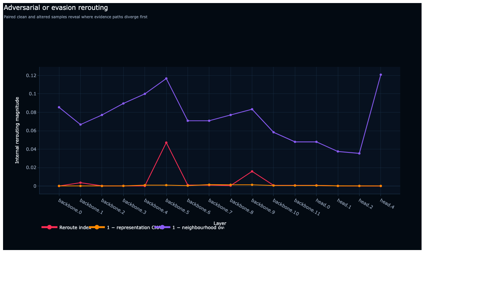

DarkSide · 2 of 19
Adversarial Rerouting
Does an attack reroute the internal decision path?


What it shows
An internal audit view for the synthetic CNN-2D fixture.
Claim boundary
This diagnostic is hypothesis-generating unless paired with appropriate controls or formal verification.
Run the complete fixture
This one command recreates the report family using a small local model bundle.
python3 scripts/run_vraven_artifact.py Models/image_pattern_cnn2dGenerate this view
from vraven.darkside import analyse_adversarial_rerouting
result = analyse_adversarial_rerouting(clean_traces, altered_traces)
figure = result.figure(mode="publication_light")
figure.write_html("result.html")InputModel bundle, one reference input, selected target
Display mode
publication_lightEvidence levelInterventional or perturbational
Machine output
darkside/adversarial_rerouting.htmlFixture
image_pattern_cnn2dHow to read the result
- Start with the title and target metadata in the generated report.
- Read the strongest structures first, then inspect weaker or opposing evidence.
- Check the stated evidence level and status before treating a relationship as causal or formal.
- Retain the trace, model version, preprocessing, and VRAVEN version with any published claim.
Reproducibility noteThe screenshot is public documentation evidence. The source run remains local-first; raw provenance files are not published because they can contain machine paths.